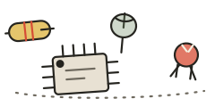

a scrapbook, but online
Hi, I'm Ajmal.
I build things on the internet and occasionally convince microcontrollers to cooperate.
17-year-old developer, electronics enthusiast, serial experiment starter, and part-time investigator of why the code worked yesterday.
Yes, this is the homepage. We made it.
Built with questionable amounts of curiosity.
You found the secret note. It says: "have you tried turning it off and on again?" Also, you have excellent taste in clicking things.
section c
Project scraps
A pile of things I've built, started, or started-then-restarted. Each one is a scrap of paper in the collage below. Links go to real pages only — no imaginary demos.
Current bug count: classified information.
section d
The workshop
A maker's notebook of the tools and topics I keep poking at. None of these are finished — that would rob me of my favourite hobby: starting something else.

-
Arduino experiments
Where every project begins: one blinking LED and unreasonable confidence.
boards: several -
ESP32 builds
Wi-Fi-enabled chaos. Now my projects can fail remotely.
radio: yes -
Sensor projects
Teaching machines to feel things. Currently they feel confused.
readings: noisy -
Robotics & servos
In theory: smooth motion. In practice: ominous buzzing.
axis: 1, maybe -
3D printing
Turning perfect digital ideas into slightly warped physical ones.
supports: grudgingly -
Hardware prototypes
Breadboard phase — the stage where cables go to multiply.
dupont: many -
Programming experiments
Tiny scripts that solve problems I definitely had, plus several I probably invented.
commits: chaotic
This looked easier in my head. TODO: become less ambitious. Rejected.
section e
Currently exploring
Scraps I move around on the corkboard. They change whenever my attention span does. editable in script.js
section f
About me, sort of
I like building things, figuring out how they work, and occasionally discovering that the problem was one missing semicolon. Or a wire. Or my entire approach.
Most days that means writing code for the web on one side of the desk and nudging physical electronics into behaving on the other. The two hobbies argue a lot, but they've produced some genuinely useful (and some gloriously pointless) things.
I'm 17. I learn by breaking stuff, reading a lot, and pretending the smoke was planned. This corner of the internet is where all of that ends up — half-finished, mostly enthusiastic, and occasionally on fire in a metaphorical sense.
Made by a human. Bugs included.
section g
Say hello
Want to talk about a project, an idea, or why something that should work simply refuses to? The inboxes below are real.
Prefer pigeons? Me too, but the range is disappointing.